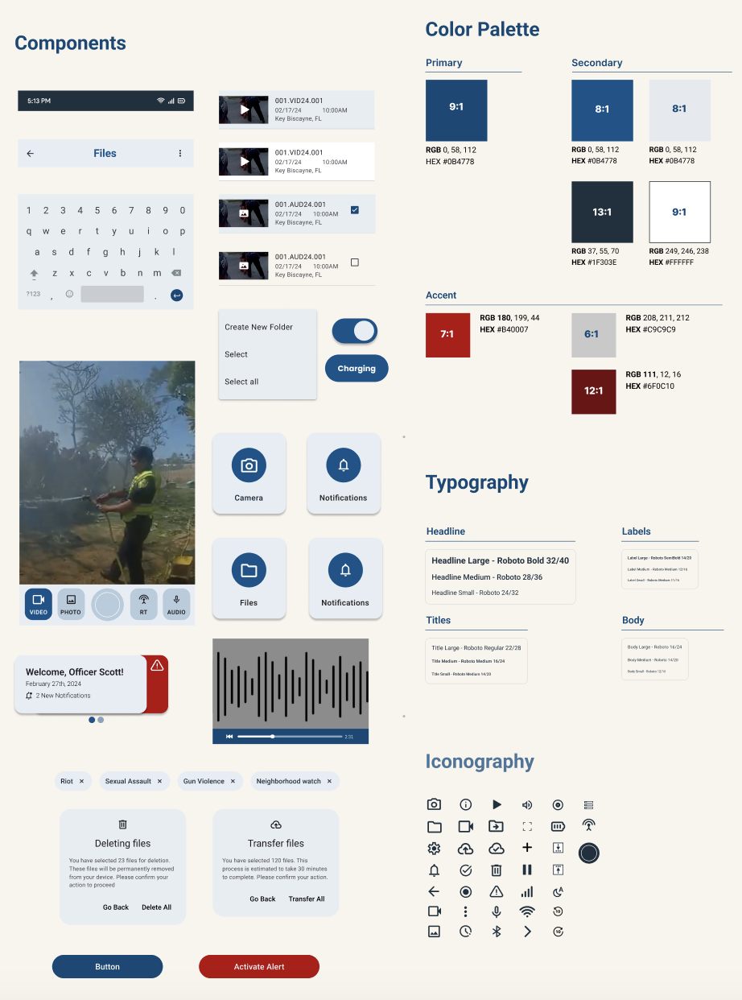
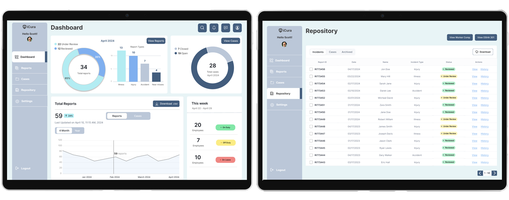

iCura
Project Context
-
iCura is an interactive application this is a desktop-based suite meant for Nurses and heath professionals at the administrator level to create, edit, evaluate incident reports. The system goal is to improve the effectiveness for accessing and completing or submitting incident records, and accuracy for reviewing report and appending case documentation.
-
Role
Time
UX reasearcher and designer
Mar 2024 - Apr 2024
Teammate
Tools
Mehdi Shah
Figma, Photoshop
-
Background
Design and develop a web-based incident reporting system specifically for nursing home settings. The system goals to improve the effectiveness for accessing and completing or submitting incident records, and accuracy for reviewing report and appending case documentation. It is also essential that this system expedites the reporting process and provides simple way to populate OSHA/ Workers Comp forms, and responsiveness of incident reporting processes including dashboard analytics to enhance resident safety and wellbeing.
Research
-
This project is focusing on external secondary research which involves gathering related information and insights from newspaper articles, research journals, case studies, open data repositories, internet searches, info from govt. sources, etc. The following research questions are being addressed during the secondary research:
-
Research Questions
- What is OSHA?
- What are OSHA violations?
- What are the OSHA forms and how does it look like?
- Who are the users?
- What different types of incidents are typically reported in nursing home settings?
- How is the current procedure to report the incident?
- What are the challenges in the existing reporting process?
- What are the main causes of delays in the reporting and resolving of incidents?
- What are the different kinds of reporting system currently using in nursing home settings?
- How are the features?
- What are the design guidelines should follow creating intuitive and user-friendly interfaces for incident reporting systems?
- What kind of data analytics and visuals need to incorporate with the system?
-
OSHA
The Occupational Safety and Health Administration (OSHA) assures safe and healthful working conditions by setting and enforcing standards, and by providing training, outreach, education, and assistance. OSHA Form 300, “Log of Work-Related Injuries and Illnesses” is used to classify work-related injuries and illnesses and to note the extent and severity of each case. When an incident occurs, use the Log to record specific details about what happened and how it happened. OSHA Form 301, “Injury and Illness Incident Report,” is used by employers to keep a record of a single injury, illness, or death in a workplace. This form is found within OSHA Form 300, which is used to log and classify all such incidents for a workplace. Each incident recorded on OSHA Form 300 must also be documented in greater detail on OSHA Form 301.

-
The users
The users of the incident reporting system in nursing home settings are primarily medical staff directly involved in or observing adverse events, such as nurse managers, front-line nurses, pharmacists, and physicians. According to The Joint Commission in the United States, nurses submit the highest number of incident reports. These individuals typically submit the majority of incident reports, as they are firsthand witnesses to incidents. However, an effective incident reporting system should allow anyone, including staff, patients, families, or visitors, to report incidents.
-
Incidents types
Incidents are typically categorized into three types
- Harmful Incidents:
Harmful incidents involve injury or illness to a patient or another individual. For example, a patient could fall out of bed and break their arm or scratch a nurse as she takes their temperature.
- Near Misses:
A near miss is when there was potential harm to a patient, or another person was almost harmed, but the situation was corrected before it occurred. For example, a patient might get caught trying to leave the facility prematurely or trip, but a nurse catches them before they fall.
- No-Harm Incidents:
A no-harm incident means that something happened to a patient or another person, but no discernible injury or illness resulted. For example, a patient could be given a blood transfusion meant for another patient, but no harm was done because the blood was compatible.
- Harmful Incidents:

-
Design Precedents
Designing web-based interfaces for incident reporting systems, it's essential to prioritize simplicity and ease of use. It's important to keep the process of reporting incidents is simple and straightforward. We need to make the reporting process clear, using intuitive language and step-by-step instructions. Then we need to organize the interface logically, with buttons and menus, and maintain consistency in design elements like colors and fonts. It is important to provide helpful documentation to guide users through the process, and also the interface has to be responsive.
-
Data analytics and visuals
To create an effective web-based incident reporting system for nursing homes, it's important to incorporate relevant data analytics and visuals.
- The system can include analytics to track key information such as incident frequency, types of incidents, and their severity levels.
- Visualizations such as charts and graphs can help users easily understand trends and patterns in incident data, and also assist in decision-making.
- Data visualizations can provide insights about incident locations and source easily which would help administrators to identify key resources.
- Trend analysis also can help predict potential incident risk and guide preventive measures.
Overall, integrating data analytics and visualizations into the system can enhance its effectiveness in identifying, addressing, and preventing incidents.
Design Process
Based on the information collected from the secondary research, I built a concept map for an Error Reporting System project that encapsulates the various components and relationships central to the design. At its core, the concept map visualizes key elements which covers user interaction, focusing on the ease of use, submitting incident records, and accuracy for reviewing report and appending case documentation, input form and support for specifically for nursing home settings.

Ideation
-
Sketches
In the ideation process we were developing, and refining ideas to address the user's needs and create an effective and delightful user experience that solves our users problem more effectively. Designing a new and innovative solution required us to brainstorm not only the design but how we would introduce this new flow to users. We explored different solutions and sketched out the user flows.
Digital Wireframes
-
As the initial design phase continued, we made sure to base screen designs on findings from the user research. Using the completed set of digital wireframes, then we created a low-fidelity prototype, so the prototype could be used in a usability study.
We conducted rounds of usability studies. Findings from the prototype testing helped us to guide the designs from wireframes to mockups. The testing study revealed what aspects of the mockups needed refining. Here are all the findings we got from usability studies:
1
Slides swipeable and clickableThe homepage now offers both swipe and click options for user interaction, providing greater flexibility and ease of activation.
2
Tag for filesUsers have expressed that the swipeable option in the file tags wasn't very clear. They suggest adding a sneak peek of the third one so it's more apparent that it's swipeable."
3
Make the Emergency noticeable with active statusIn the Emergency Tab, change the color from blue to red and for the active emergency alert changing the color dark red .
4
Change the top bar informationChange the information in the homepage box for more coherent or relatable to the duties like officer's name, date and new notification
5
“Add Files” OptionA new "Move To" functionality has been introduced, allowing users to customize their folders by adding files to "My Folders."
6
Add "Sync Device" OptionA new "Sync Device" functionality has been introduced, allowing users to sync their device to companion app.
Style Sheet
- 
Final Design
-
Our final design encompassed the opportunity areas – easy emergency alert sent, ensure public safety with record indicator light and structured media managment-for our users. We updated our top hompage bar with more relatable information, ddd "Sync Device" option, change the color for active emergency alert status and add new "Move To" functionality to the interface.
- 
Reflection
-
Impact
We try to give our users an efficient way to navigate the files which is one of the tricky part in the interfaces, since it has four different kinds of files-video, audio, RT and photos. So, we discuss together and find a better way to laying out it so that our users can easily navigate and can see the media tag, and also can add a note.
-
What I learned
The biggest challenge for designing the body worn camera interfaces is the screen size and trying to put less stuff on screen, so that the user doesn’t have any difficulty to understanding the flow. Since it is limited screen size, we really try not to put things much closer and try to give space between incons and feature so that users can easily tap or navigate.